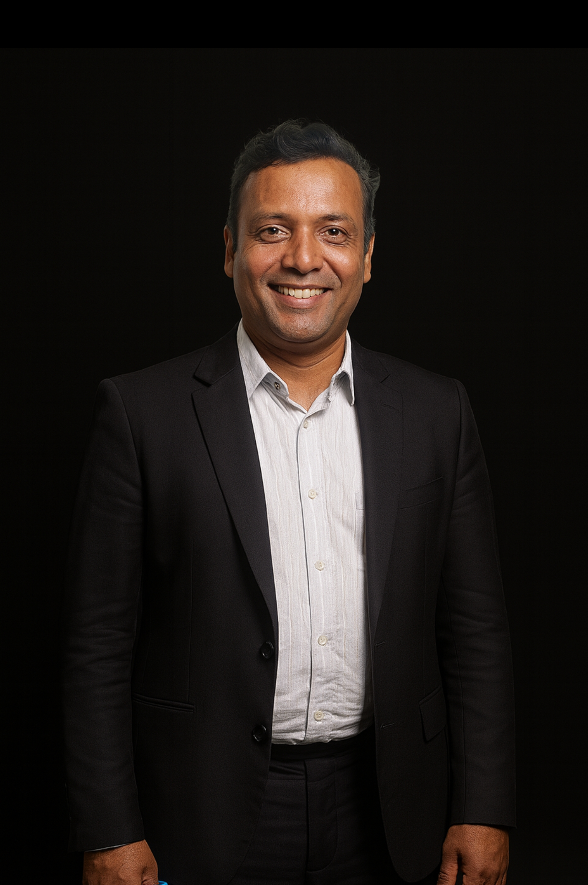

Chief Technology Officer (CTO)

As the Chief Technology Officer (CTO) of NeuroPi, Mr. Praveen Chakravarthy Ganne brings more than 25 years of international experience in designing, architecting, and delivering enterprise-scale technology solutions for some of the world's most demanding organizations. His career spans leadership positions across the United Arab Emirates and India, where he has successfully delivered mission-critical systems, enterprise integration platforms, cloud-native architectures, and large-scale digital transformation initiatives for government agencies, aviation, transportation, banking, and multinational enterprises.
A solutions-oriented technology executive, Mr. Ganne has built his career around developing highly scalable, secure, and resilient enterprise software platforms while aligning technology strategy with long-term business objectives. His expertise spans Enterprise Architecture, Artificial Intelligence, Solution Architecture, Microservices, Cloud Computing, Enterprise Integration, Digital Platforms, Data Engineering, and full Software Development Life Cycle (SDLC). Throughout his career, he has consistently enhanced collaboration between business, engineering, quality assurance, and operations teams, reducing implementation risks, accelerating delivery, and improving product quality.
One of the defining strengths he brings to NeuroPi is his extensive experience in designing and operating mission-critical technology platforms where security, availability, scalability, and operational continuity are paramount. This experience directly supports the development of the NeuroPi Industrial Intelligence Platform (NIIP), particularly for defence and shipbuilding environments where trusted engineering intelligence, secure deployment, and enterprise integration are essential.
Mr. Ganne has spent over two decades delivering enterprise technology solutions across the Middle East and India. He has successfully led multidisciplinary engineering teams, developed technology roadmaps, and delivered large-scale digital platforms supporting government organizations, aviation enterprises, financial institutions, telecommunications providers, and industrial clients. His experience includes strategic technology planning, enterprise solution architecture, cloud transformation, product innovation, and technology consulting.
During his tenure as Senior Technical Engineer at Emirates Group, one of the world's largest and most technologically advanced aviation organizations, Mr. Ganne was responsible for delivering strategic and business-critical IT projects that demanded exceptionally high standards of reliability, scalability, and security.
His responsibilities included:
Working within Emirates provided extensive exposure to enterprise governance, large-scale systems integration, secure operations, and high-volume transactional environments—experience directly relevant to the secure, enterprise-grade architecture required for the Digital Twin Sync System proposed for MDL.
Mr. Ganne possesses deep expertise in designing enterprise software ecosystems capable of supporting large-scale operations. His experience includes:
These competencies are directly reflected in the architecture of the NeuroPi Industrial Intelligence Platform, including secure air-gapped deployment, scalable microservices, Engineering Context, API-driven integration, and Digital Twin synchronization.
Throughout his leadership roles, Mr. Ganne has consistently focused on innovation and next-generation technology platforms. His experience includes Artificial Intelligence, enterprise automation, intelligent workflow orchestration, product strategy, AI-enabled decision support, cloud-based SaaS platforms, and enterprise product development.
As Global Service Delivery Manager at Futureon Digital LLC, he has led product strategy, technology roadmaps, prototype development, Minimum Viable Product (MVP) delivery, and innovation programmes that transform market requirements into scalable technology products.
Mr. Ganne has extensive experience integrating heterogeneous enterprise platforms through modern interoperability frameworks, including:
This expertise is particularly valuable for integrating the NeuroPi Industrial Intelligence Platform with shipyard engineering systems such as CAD, PLM, ERP, document management, and Digital Twin environments.
Across multiple international organizations, Mr. Ganne has successfully:
His ability to bridge technology strategy with engineering execution has enabled organizations to accelerate innovation while maintaining operational stability and security.
The proposed AI-Powered Digital Twin Sync System requires leadership that combines enterprise software architecture, Artificial Intelligence, large-scale systems integration, secure deployment, engineering governance, and mission-critical operational experience.
Mr. Praveen Chakravarthy Ganne brings exactly this combination. His experience in designing and delivering secure enterprise platforms for internationally recognized organizations, including Emirates Group, Intertec Systems, and Futureon Digital, together with his expertise in enterprise architecture, AI-enabled platforms, cloud technologies, systems integration, and digital transformation, positions him exceptionally well to lead the technical execution of the NeuroPi Industrial Intelligence Platform for Mazagon Dock Shipbuilders Limited.
His proven ability to architect secure, scalable, and high-performance enterprise systems ensures that the proposed solution is built not merely as a software application, but as a robust, defence-grade Industrial Intelligence platform capable of supporting the long-term digital transformation objectives of India's shipbuilding industry.